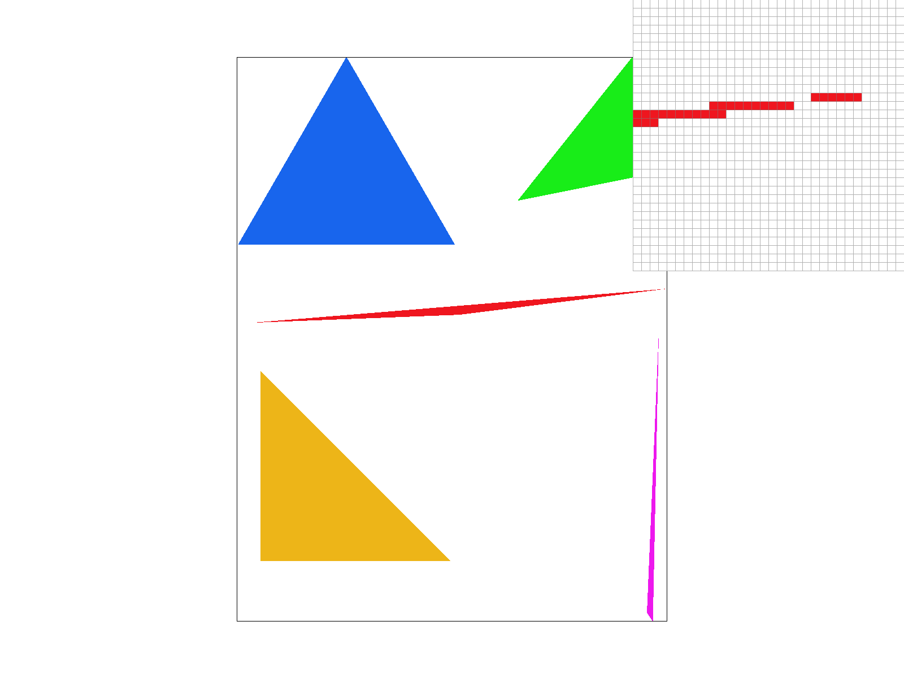
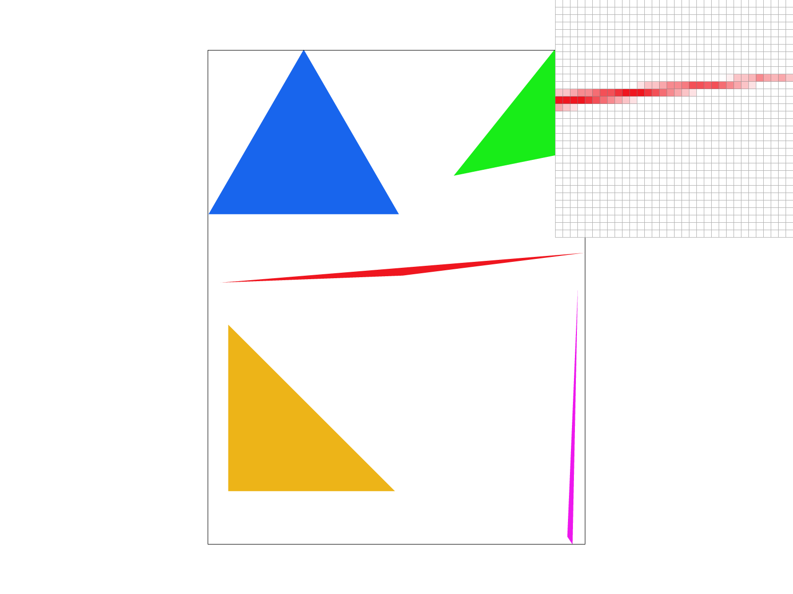
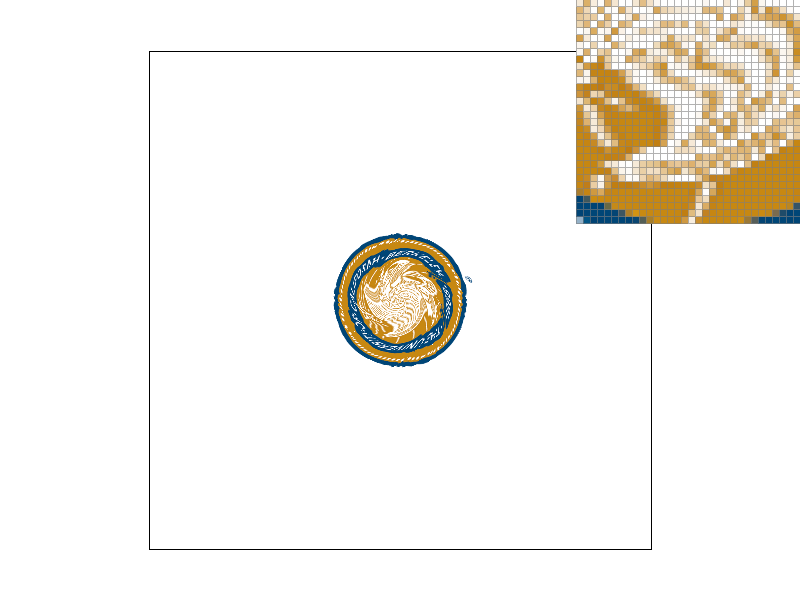
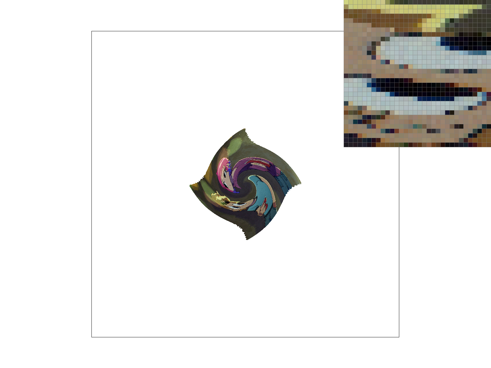
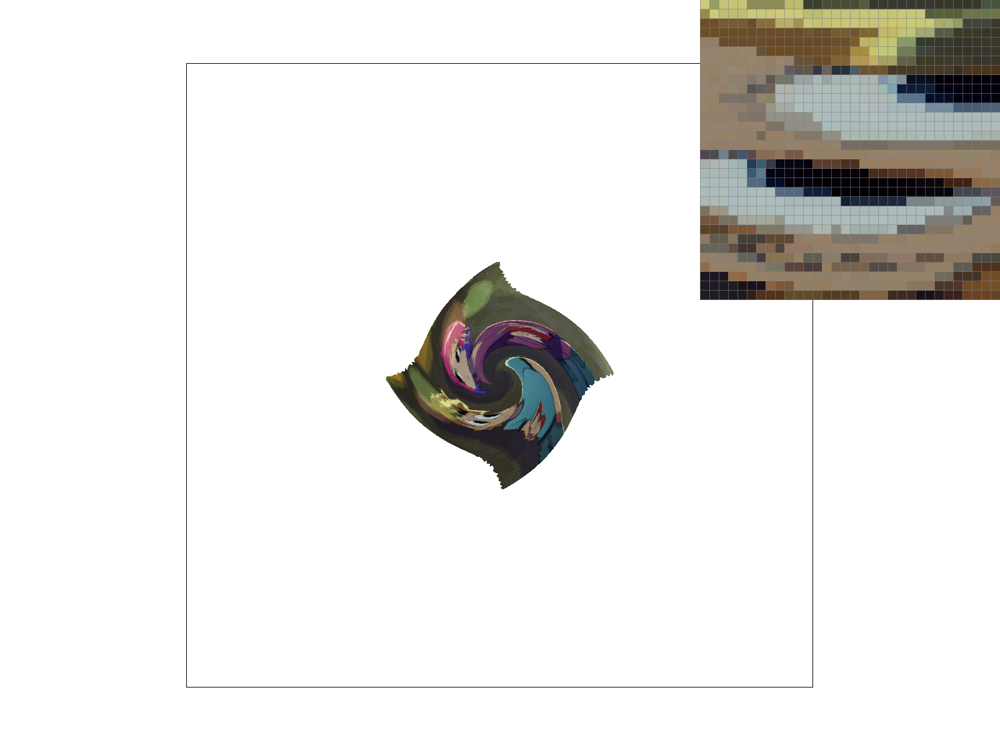
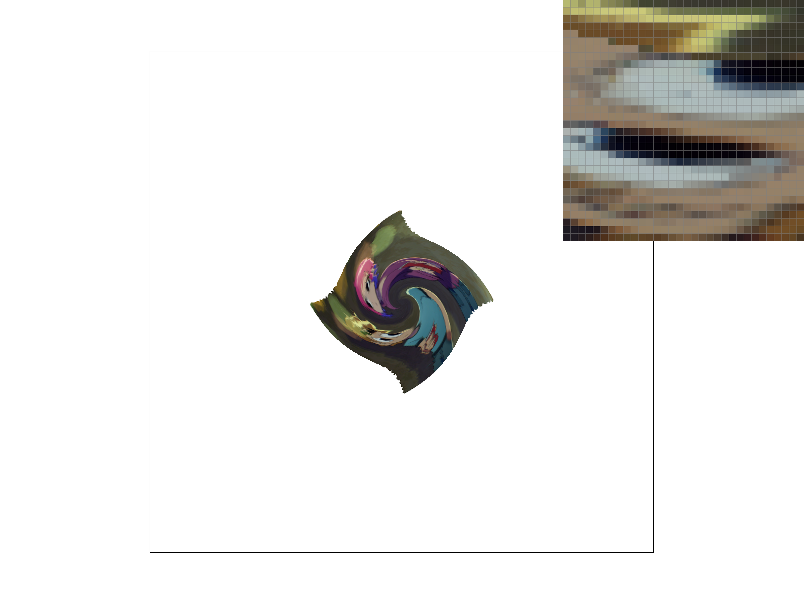

CS184/284A Spring 2025 Homework 1 Write-Up
Link to webpage: https://cal-cs184-student.github.io/hw-webpages-liokaiser-writeup/hw1/index.html
Link to GitHub repository: https://github.com/cal-cs184-student/sp25-hw1-liokaiser

Overview
This assignment is intended to process SVG files and rasterize them onto the screen. There are different techniques employed to process these images through supersampling, pixel sampling, and level sampling.Task 1: Drawing Single-Color Triangles
In order to rasterize triangles, you "scan" over the points the triangle presides in and fill in the pixels in the triangle. In order to start scanning, you have to find the vertexes that can form the corners of the smallest rectangle you can form around the triangle mainly for efficiency in the run time. Now you must iterate through each point within the triangle. You want to sample the middle of the pixel so you should add 0.5 to each value of the pixel's coordinate. With these values, perform a pont-in-triangle test where you form lines from the vertices given for the triangle. The you find the half planes of each line and see if the currently scanned point lines within all three half planes of each line. If it is, then that point is considered within the triangle and you can fill in the pixel. Repeat this until the whole triangle is completely filled in.My algorithm is no worse than one that checks each sample within the bounding box of the triangle through the above reasoning. It basically has to scan through each pixel of the smallest rectangle the triangle can fit in and just call the inside function and fill it in if the inside function returns true. There is no super sampling implemented yet so there will be jaggies likely.
Here is an image of a straight edge of a triangle with default viewing parameters
Task 2: Antialiasing by Supersampling
Adding supersampling requires knowledge about the sample buffer and the frame buffer. Before when the sample rate was 1, the points of data of the sample buffer would correlate to each pixel the frame buffer would output. Everything was pretty much one-to-one. As you increase the sampling rate, this internally increases the resolution of the triangle so you're no longer bound by the height and width of the frame. This allows for more sample points than is what is allowed with a sample rate of 1.Here is an image of a straight edge of a triangle with default viewing parameters
|

|
|
|
|

|
These results occur since the sample buffer allows for more points to sample the triangle in the spaces that are "skipped" in the first image (the one with a sample rate of 1). So the "floating" pixels detached from the rest of the triangle has enough data to be sampled when supersampling is occurred. The super sampling also kinda "blurs" the edges of the images to make them look less jagged and smooths out the apparent pixels for diagonal shapes.
Task 3: Transforms
Task 4: Barycentric coordinates
Barycentric coordinates are a way to determine a position of a point within a triangle. Unlike regular cartesian coordinates where there is a fixed plane, the Barycentric coordinates rely on the points position relative to the three vertices of the triangle. The Barycentric coordinates have three values, alpha, beta, and gamma, that are weights used to determine how the point's location is influenced by the vertices. It's pretty much a linear combination of the three points. All of the alpha beta and gamma values should sum to 1 in order for the point to be valid and within the triangle. Technically the values can break that rule which just means that point is probably outside of the triangle.Task 5: "Pixel sampling" for texture mapping
Pixel sampling is used to map the texture (an image) onto a triangle. Before this task, you'd simply render the shape of the triangle that is filled with one color for the whole triangle. In order to put an image onto the triangle, there needs to be sampling. You must go use the UV coordinates of the texture for the triangle to figure out what parts of the image and their respective color will be mapped onto triangle. Each texture will have a UV coordinate plane and the UV coordinates will show where the vertices of the triangle will be with respect to the image. Then you must scale the UC coordinates by the image dimensions when you actually retrieve the texel from the image.This is where the two sampling methods come in: nearest and bilinear. The nearest method simply picks the singular point on the texture image that is closest to the UV coordinate chosen at that spot. Because it only samples one point on the texture, this can cause sharp transitions from pixel to pixel making a very "pixelated" look.
The second method is bilinear which is where you select the four closest points on the texture given by the UV coordinate. This instead averages the color value of the point. This allows for a more smoother transition between pixels creating an overall smoother image.
Neither method is better than one another. It all depends on the visual style wanted for the image at the time.
|
|
|
|

|
|
The bilinear sampling clearly defeats the nearest sampling. For the images with nearest filtering enabled, you can clearly see harsh transitions from darker to brighter pixels. The bilinear method smoothens out those transitions and make it look less messy.
The nearest neighbor method will look better for computer graphics such as logos and shapes generated by a computer. This is because it makes the shapes much more clearer to look at on the screen. An example of this is seen in old video games with pixel sprite art such as Super Mario Bros. You want a clear distinction of Mario and the background since that is what the designers intended.
You'd want bilinear filtering for real life images, especially those with some grain in them. When people take low light photography, there may be some graininess due to camera limitations which add noise to the image. Adding bilinear filtering can help smoothen the noise to make it less noticeable. Another use for bilinear filtering is for images with heavy compression on them. This again smoothens out the artifacts found in JPEG images and makes them look less blocky.
Task 6: "Level Sampling" with mipmaps for texture mapping
Level sampling is the process of choosing which mipmap level of a texture to use based on viewing distance and scale. I was able to implement this into the rasterizer by getting a UV at the current x and y coordinate and the UV of the next step. The difference in distance between the two of these UV coordinates is used to see how big of a change going from one UV coordinate to the next is. This is used to determine whether or not we want a blurred or high resolution texture. Basically if the difference between these two UV coordinates is big, then we want to use a blurred image (a higher mipmap level). If the difference is small, we want to use a lower level mipmap level which consists of an image close or exactly the original image resolution.Supersampling provides the highest quality out of the methods but it is very slow and memory intensive. This is because of increased memory needed for the sample buffer. And the speed is reduced from needing to sample more points per pixel. This technique is great for edges.
Level sampling allows for fast aliasing with a moderate amount of memory used. It's more fast since the mipmaps are already generated and there's no need to process a higher resolution image into something smoother every time it needs to render. This technique however is not useful for smoothening edges, just textures.
Pixel sampling is quite fast since it just needs to lookup the points within the texture. Bilinear is slightly slower than nearest neighbor but not by a lot since it requires 4 texture samples per point on the triangle. The memory is not drastically increased since it's just using texture image given. Bilinear interpolation provides a smoother texture for its images because othe 4 points is samples at a time.
|

|
|
|

|

|